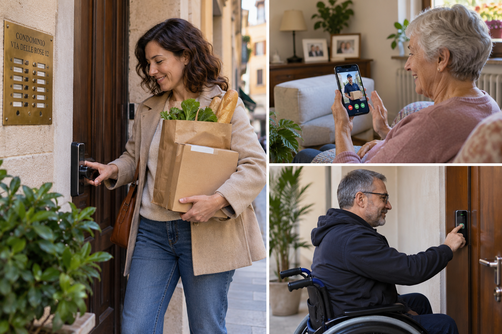

Entrare in casa con le buste della spesa. Reggere un pacco o un bambino in braccio mentre cerchiamo le chiavi. Alzarci dal divano perché qualcuno ha suonato al citofono. Essere fuori proprio quando arriva un corriere.
Sono comodità che possono essere utili a chiunque. Ma la stessa tecnologia cambia significato quando una persona ha difficoltà a camminare, ad alzarsi rapidamente, a usare le mani o a raggiungere il citofono: ciò che per qualcuno evita un piccolo fastidio, per un'altra persona può eliminare una barriera.
Ciò che per molti è comodità, per una persona con ridotta autonomia può diventare indipendenza.
Non occorre necessariamente trasformare tutta la casa. Alcune soluzioni possono essere aggiunte agli impianti esistenti, dopo averne verificato la compatibilità. Si parte dal gesto che crea difficoltà e si cerca il modo più semplice per renderlo possibile.
Il citofono arriva dove siamo noi
Un citofono connesso può trasferire sullo smartphone alcune funzioni del dispositivo a parete: ricevere l'avviso di una chiamata, parlare con chi ha suonato e sbloccare il portone compatibile.
Possiamo così rispondere dal divano o dal letto, senza affrettarci. Oppure parlare con un visitatore mentre siamo fuori casa e consentire l'ingresso a un familiare o a un assistente domiciliare autorizzato. Anche l'arrivo di un corriere può essere gestito a distanza, identificando prima chi sta chiedendo di entrare.
È la funzione che raggiunge la persona, invece di obbligare la persona a raggiungere il dispositivo.
Piccoli interventi, costi da conoscere
Sono cifre che aiutano anche a correggere un altro pregiudizio: non ogni intervento di domotica assistiva richiede impianti complessi o investimenti elevati.
Per dare un ordine di grandezza, le pagine italiane di Ring Intercom Audio e Ring Intercom Video riportano rispettivamente 79,99 e 99,99 euro. Il primo permette conversazione audio bidirezionale, apertura a distanza e chiavi virtuali tramite smartphone; il secondo aggiunge il video sugli impianti compatibili. Non trasforma un citofono soltanto audio in uno dotato di telecamera. Sono esempi, non indicazioni di acquisto.
Il produttore presenta l'installazione come fai-da-te su citofoni compatibili: non significa che ogni impianto possa essere adattato o che ogni persona debba provvedere da sola. Ring dichiara inoltre che il citofono originale continua a funzionare se manca Internet. Questo non significa che restino disponibili le funzioni remote dell'app. E sbloccare il portone del palazzo non equivale ad aprire la porta dell'appartamento.
Entrare senza cercare le chiavi
Per la porta di casa esistono dispositivi retrofit: sistemi che si aggiungono a una serratura compatibile, spesso dal lato interno. Un motore compie il movimento che normalmente facciamo girando la chiave.
A seconda del modello e degli accessori, l'accesso può avvenire tramite smartphone, codice, impronta digitale, smartwatch o credenziali NFC da avvicinare a un lettore. Non tutte queste modalità sono presenti in ogni prodotto.
Come riferimento economico, Nuki Smart Lock Go è proposta a 149 euro: il produttore dichiara un montaggio interno senza perforazioni o attrezzi speciali, previa verifica di porta e cilindro. L'accesso remoto è disponibile separatamente; tastierini e altri accessori possono aggiungere costi.
Un altro esempio è Aqara Smart Lock U200, che prevede impronta digitale, codici e app, oltre a carte NFC compatibili. Alcune integrazioni richiedono dispositivi aggiuntivi: le possibilità vanno verificate rispetto al telefono e all'ecosistema utilizzati.
Prezzi rilevati sulle pagine ufficiali il 16 settembre 2026. Prezzi, disponibilità, compatibilità e caratteristiche possono cambiare: prima di un eventuale acquisto occorre verificare il costo completo, gli accessori necessari e gli eventuali servizi a pagamento.
La stessa soluzione, benefici diversi
Per chi rientra con la spesa, non cercare una chiave è una comodità. Per chi ha poca forza nelle mani, movimenti limitati delle braccia o difficoltà di equilibrio, evitare quel gesto può rendere possibile un ingresso autonomo.
La scelta non deve fermarsi alla tecnologia più nuova. Un codice può essere comodo per qualcuno e difficile da ricordare per un altro. Un lettore d'impronte deve essere raggiungibile e utilizzabile; un'app deve risultare comprensibile alla persona che la userà.
La prova pratica conta quanto la scheda tecnica.
Una serratura digitale è necessariamente meno sicura?
Il fatto che una serratura sia elettronica non basta a giudicarla meno sicura di una chiave. Ma non esistono garanzie di sicurezza assoluta: contano la protezione meccanica della porta, la qualità del dispositivo, la configurazione e la gestione degli accessi.
Autenticazione e crittografia servono a proteggere credenziali e comunicazioni. Nuki, per esempio, descrive l'impiego della crittografia end-to-end. Secondo il sistema scelto, possono essere disponibili autorizzazioni personali, accessi temporanei, revoca delle credenziali e registri degli accessi.
Per un assistente domiciliare può essere utile un'autorizzazione limitata agli orari concordati, invece di una copia permanente della chiave.
Restano necessarie alcune precauzioni: proteggere smartphone e account, installare gli aggiornamenti, controllare le batterie e predisporre una modalità alternativa di accesso in caso di guasto. Anche quest'ultima deve essere concretamente utilizzabile dalla persona o da chi può aiutarla.
La tecnologia deve sostenere l'autonomia, senza diventare un nuovo punto di fragilità.
Sbloccare non significa aprire fisicamente
Una serratura intelligente può sbloccare la porta, ma non necessariamente muoverla. Chi non ha la forza o la mobilità necessarie per spingere o tirare il battente può aver bisogno di un automatismo ulteriore.
Motorizzazione, spazi di passaggio e condizioni di sicurezza richiedono una valutazione tecnica specifica. Dedicheremo un successivo approfondimento all'apertura fisica della porta: è una questione distinta, che non va nascosta dietro la promessa di entrare “senza chiavi”.
Un problema alla volta
Non è necessario cominciare dalla “casa intelligente”. Si può cominciare da una porta che è difficile aprire, da un citofono troppo lontano, da una chiave che una mano non riesce più a girare.
La buona tecnologia parte da qui: non da ciò che sa fare, ma da ciò che permette a una persona di tornare a fare.
La rubrica
Tecnologie che aiutano è una rubrica informativa di Fondazione COINSIEME ETS dedicata ad ausili e soluzioni che possono favorire autonomia, accessibilità e qualità della vita. Marchi e prodotti sono citati esclusivamente per documentare tecnologie realmente esistenti: la Fondazione non vende né promuove commercialmente tali prodotti.